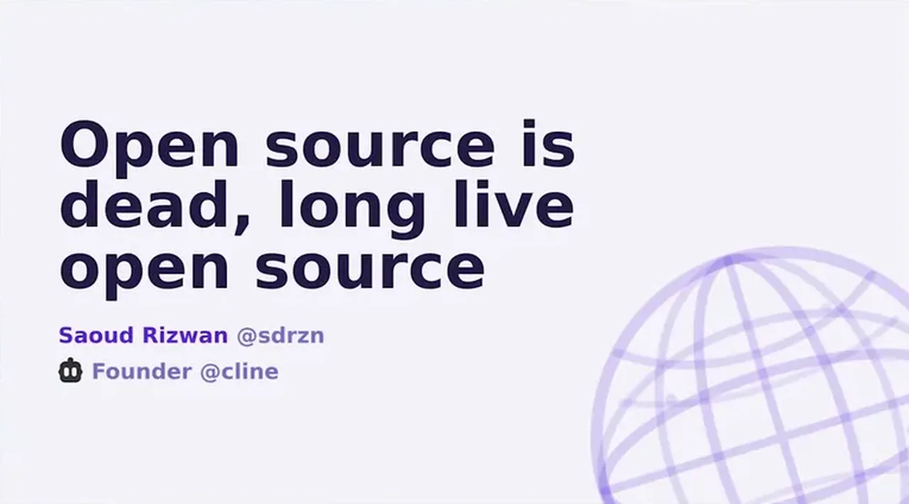
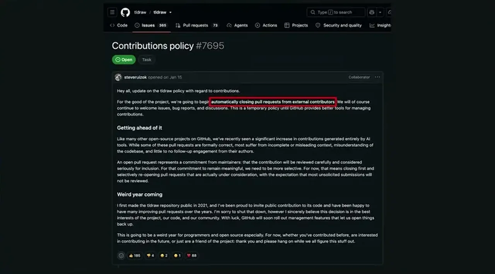
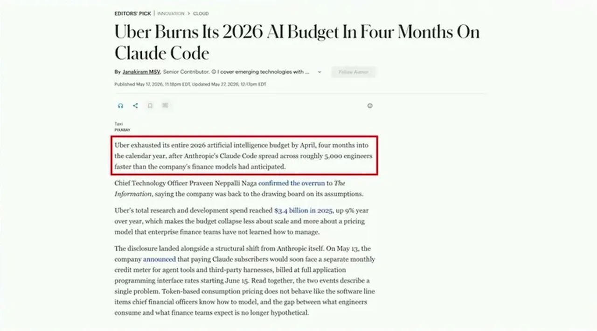
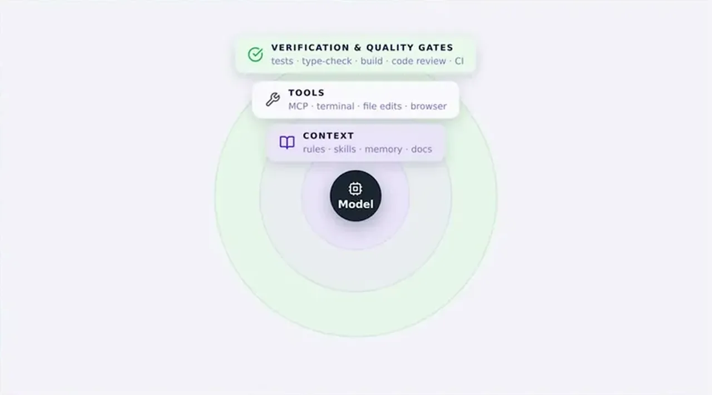
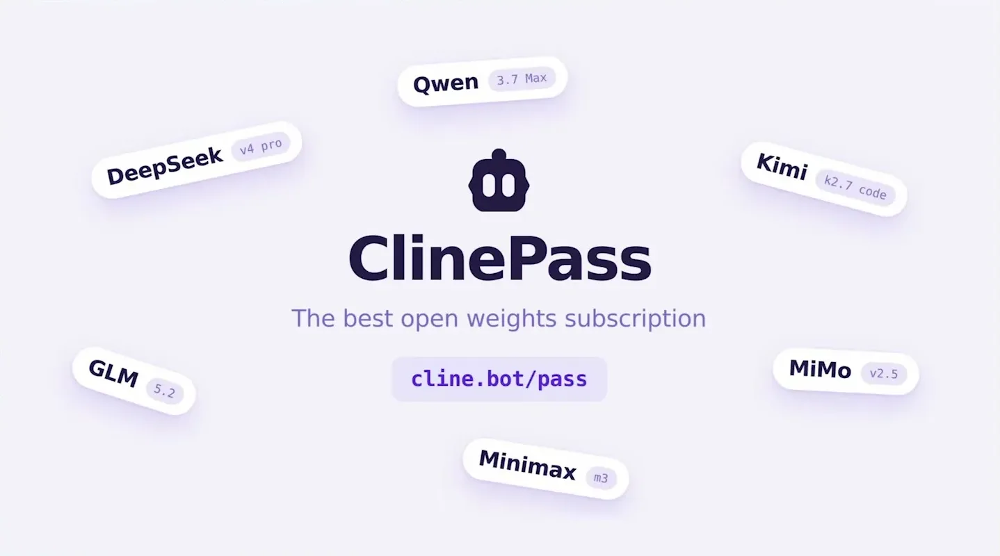

Rizwan cites the Zig project's code of conduct, which bans all AI use on pull requests, issues, and comments because the maintainers value growing trusted contributors over adding code. He also cites curl's CEO describing the project as effectively being overwhelmed by AI-generated bug reports, to the point of considering ending its decades-old bug bounty program.
“they essentially ban all use of AI. You can't use it on pull requests or issues or even comments”
▶ watch at 02:04“his project is effectively being dodoed by AI generated bug reports and they're even considering um shutting down their bug bounty program for the first time in decades”
▶ watch at 02:37
Rizwan describes a real incident where the LiteLLM Python package, which gets roughly 3.5 million downloads a day, was compromised for three hours after attackers stole its PyPI publishing token, shipping a version that harvested API, SSH, and crypto keys and installed a remote-execution backdoor. It was caught quickly only because the malware happened to crash Cursor, which a security researcher noticed.
“light LLM um, is a Python package. It gets like three and a half million downloads a day. They were compromised for three hours where attackers um used a GitHub app that they used um to steal their Pippi publishing tokens”
▶ watch at 04:11
Rizwan cites an Uber CTO report: 95% of engineers using Claude, roughly 70% of committed code AI-generated, spend up to $2,000 per user per month, and a full year's AI budget spent in four months. He also cites a SemiAnalysis experiment showing a $200 Claude subscription yields about $8,000 of underlying API usage and a $200 Codex subscription about $14,000 -- evidence, in his framing, that labs are subsidizing usage to build lock-in before eventually raising prices.
“their monthly spend per user was up to $2,000 and they said they used their entire 2026 budget um in just four months”
▶ watch at 06:16“give them about $8,000 worth of API usage. Um and a $200 subscription to codeex would give them about $14,000 worth of API usage”
▶ watch at 06:47
Rizwan describes Cline's own test of a real bug against both GLM and Opus: GLM used twice the tokens but cost half as much, and unlike Opus, cleaned up dead code and verified the build compiled -- Opus finished faster but left type errors and broke the production build. He projects that inference on a 1-trillion-parameter model will cost roughly 90% less by 2030 as hosting providers compete the way cloud compute and storage commoditized a decade earlier.
“GLM used twice as many tokens but only cost half as much. Opus finished faster. It used half as many tool calls.”
▶ watch at 09:20“GLM cleaned up dead code and verified that the build compiled before completing while Opus didn't. It left a bunch of type errors and it broke the production build.”
▶ watch at 09:50“by 2030, the estimates are that inference on a 1 trillion parameter LLM will cost um 90% less than it does today”
▶ watch at 12:57
Cline launched an open-weights subscription plan that uses volume-based discounts and inference-host partnerships to undercut direct API pricing for models like GLM and DeepSeek, positioned as a way to try open-weight models without committing to a single closed-model subscription.
“we launched uh an openw weightight subscription plan earlier this week that through volume uh based discounts and partnerships uh with inference host providers we can offer significant discounts compared to paying for these models um at direct API cost”
▶ watch at 16:03
Rizwan is Cline's founder pitching Cline's own open-weights subscription in the same talk that argues closed-lab pricing is unsustainable, so the cost comparisons, while specific and sourced, are also marketing for a directly competing product he's selling.
| Stance | Claim | t |
|---|---|---|
| asserts | The Zig language's code of conduct bans all use of AI on pull requests, issues, and even comments. | 02:04 |
| asserts | curl's CEO says the project is effectively being overwhelmed by AI-generated bug reports and is considering ending its bug bounty program for the first time in decades. | 02:37 |
| warns | LiteLLM, a package with roughly 3.5 million downloads a day, was compromised for three hours after attackers stole its PyPI publishing token. | 04:11 |
| asserts | Uber's monthly Claude spend per engineer reached $2,000, and the company used its entire 2026 AI budget in four months. | 06:16 |
| asserts | A $200 Claude subscription yields about $8,000 of underlying API usage, and a $200 Codex subscription yields about $14,000. | 06:47 |
| asserts | In a real bug-fix test, GLM used twice as many tokens as Opus but cost half as much, while Opus used half as many tool calls and finished faster. | 09:20 |
| warns | In the same head-to-head test, Opus left type errors and broke the production build, while GLM cleaned up dead code and verified the build compiled. | 09:50 |
| predicts | Inference on a 1-trillion-parameter model will cost roughly 90% less by 2030 as hosting providers compete on efficiency. | 12:57 |
| asserts | Cline launched an open-weights subscription plan using volume discounts and inference-host partnerships to undercut direct API pricing. | 16:03 |
Machine-readable copy embedded in this page (script#ontology) and in the corpus ontology.